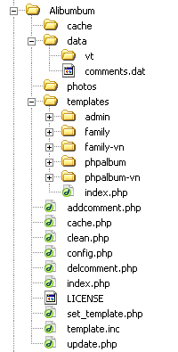
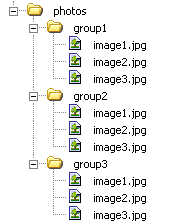
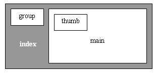
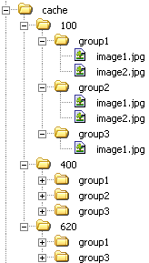
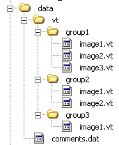

Giới thiệu
Gallery ảnh trên mạng: là một trang web để xem ảnh, bắt đầu với các trang mục lục với đầy các ảnh nhỏ nhỏ (thumbnails) bấm vào ảnh nhỏ thì ra ảnh to (resized images), bấm vào ảnh to thì ra ảnh gốc (original images).
Alibumbum là một Open Source PHP script giúp bạn tạo ra một gallery ảnh cá nhân trên mạng, không sử dụng bất kỳ một database nào. (xem demo)
Đặc điểm
- Tự động tạo "ảnh mục lục" (thumbnails) và "ảnh điều chỉnh kích cỡ" (resized images).
- Đếm số lần xem ảnh, và viết chú thích (comment) cho ảnh.
- Template đơn giản, gọn nhẹ dễ điều chỉnh (Bạn có thể tự tạo ra template cho riêng mình mà ko cần biết tí gì về PHP, chỉ cần biết viết HTML là đủ).
- Riêng biệt hóa ảnh gốc với gallery (thư mục ảnh gốc bạn upload lên thế nào thì sẽ được giữ nguyên như vậy, ko như những gallery ảnh khác, thường làm xáo trộn hoặc thêm thắt linh tinh vào).
- Home page: để ngỏ cho bạn tùy ý thiết kế, có khả năng hiển thị những ảnh được xem nhiều nhất trên trang này nếu bạn muốn.
Tài liệu này phục vụ cho các bạn biết sơ về lập trình PHP, có ý định sử dụng hoặc phát triển tiếp Alibumbum. Đối với những bạn chỉ có nhu cầu sử dụng, và không biết nhiều lắm về lập trình PHP thì chỉ cần đọc đến hết phần viết về quản trị và bảo mật là được, thậm chí đến hết phần Cấu trúc một template nếu bạn có ý định tạo ra giao diện mới của Alibumbum cho riêng mình. Nếu phần nào nặng mùi lập trình quá, các bạn có thể đọc thoáng lên hoặc bỏ qua :)
Tôi không định giành nhiều thời gian để viết tài liệu cho Alibumbum lắm (nên lời văn, bố cục của tài liệu khá là "nông dân"). Đây chỉ là một project làm chơi bời trong thời gian nghỉ hè rảnh rỗi. Sau khi làm xong, tôi cũng không có ý định phát triển tiếp nữa, tùy cho các bạn trong cộng đồng mã nguồn mở "xử lý" tuân theo luật GNU GPL
Archive gốc
|

|
-
photos chứa ảnh gốc của bạn, là thư mục mà bạn sẽ động chạm nhiều nhất trong suốt quá trình sử dụng Alibumbum.
templates chứa các templates của Alibumbum, rất mong các bạn khắp nơi làm giầu có thêm cho thư mục này với các kiểu mẫu template của chính bạn.
data chứa những dữ liệu như là chú thích của các ảnh, số lần một ảnh được xem.
cache các ảnh mục lục và ảnh điều chỉnh kích cỡ được tạo ra từ ảnh gốc và lưu trong này, mỗi lần cần đến là nó sẽ được lôi từ đây ra dùng, chương trình ko cần phải mất công tạo lại chúng từ ảnh gốc nữa.
|
Cài đặt
Bạn hầu như ko phải làm gì hết: copy ảnh gốc vào thư mục photos theo yêu cầu dưới đây rồi upload cả archive alibumbum lên mạng là xong.
Thư mục photos
Copy ảnh gốc của bạn vào thư mục photos theo cấu trúc sau:

Alibumbum chỉ chấp nhận ảnh ở format gif, jpg, và png. Tên ảnh không được chứa dấu chấm. Ví dụ:
my.father.jpg => KO! (ko chấp nhận chứa dấu ".")
my_father.bmp => KO! (ko chấp nhận ảnh .bmp)
my father.jpg => OK
Tất cả các ảnh phải nằm trong một nhóm ảnh (một thư mục con của thư mục photos). tên của những nhóm ảnh này cũng ko được chứa dấu chấm.
Chú ý: trong Windows XP thường hay có những file thumbs.db ẩn trong các thư mục ảnh, bạn phải xóa hết những file ẩn này đi trước khi upload Album lên mạng. Tóm lại là thư mục photos này chỉ được chứa ảnh (gif, jpg, png), ko được chứa bất kỳ một file gì khác.
Tư tưởng chung
Thực ra cả trang web chỉ có độc một trang index.php chạy, diện mạo của trang web thay đổi khi ta truyền các tham số khác nhau cho nó:
- Muốn xem một nhóm thì dùng
index.php?page=groupname => sẽ hiển thị các thumbnails (ảnh nhỏ nhỏ) của nhóm đó
- Muốn xem một ảnh thì
index.php?page=photo2006/my_family.gif => sẽ hiển thị ảnh my_family.gif trong nhóm photo2006 (đường dẫn đầy đủ tới ảnh gốc là photos/photo2006/my_family.gif)
Mọi ảnh trong album đều được phân biệt với nhau dựa vào tên nhóm và tên ảnh: Ví dụ: photo2006/my_family.gif. Để tiện truyền cái đường dẫn này đi, ta encode nó, sử dụng hàm urlencode() của PHP, decode lại nó như cũ bằng cách dùng hàm urldecode(). Ví dụ ta muốn xem ảnh
photo2006/my family.gif, ko thể truyền đi trực tiếp là index.php?page=photo2006/my family.gif mà fải encode đường dẫn trước trở thành index.php?page=photo2006%2Fmy+family.gif
Cố gắng để người sử dụng chỉ cần fải làm việc với ảnh gốc trong thư mục photos (Thêm ảnh thì cũng chỉ thêm ảnh gốc, xóa ảnh thì cũng chỉ cần xóa ảnh gốc, cập nhật ảnh thì cũng chỉ cập nhật ảnh gốc). Tóm lại khi làm bất cứ việc gì cũng fải nhìn vào thư mục photos, cố gắng adapte album dựa vào cấu trúc ảnh gốc này, và ko được động vào nó.
Quản lý templates
Trong thư mục templates chứa nhiều bộ template, để biết template hiện hành của người sử dụng chọn là gì, mỗi lần index.php được load, nó sẽ nhìn vào cookie mang tên "template", nếu cookie này chưa tồn tại thì sử dụng $DEFAULT_TEMPLATE (trong config.php). Muốn đổi template thì chỉ đơn giản thay đổi giá trị của cookie "template" rồi refresh lại là xong (refresh lại đồng nghĩa với reload lại index.php vì tại bất kỳ thời điểm nào lúc bạn xem ảnh cũng là trang index.php hết, và script này đọc lại giá trị của cookie "template" mỗi lần nó được load). Script set_template.php sẽ làm việc này cho bạn, ví dụ lúc bạn chạy set_template.php?tpl=family nó sẽ thay giá trị của cookie "template" thành family, rồi refresh lại index.php
Một bộ template xuất hiện dưới dạng là một thư mục con của thư mục templates, tên của template chính là tên của những thư mục đó, khi sử dụng set_template.php?tpl=templateName thì templateName chính là tên của một trong số các thư mục này. Như vậy tên của một bộ template ko được chứa các kí tự đặc biệt như dấu cách (space), bởi ta fải truyền cái tên này như một tham số của set_template.php.
Chú ý: Lúc bạn đang chạy Alibumbum trên trình duyệt, bạn ko thể gõ trực tiếp lên thanh địa chỉ là set_template.php?tpl=xyz để đổi template hiện hành thành template xyz được vì bạn đang ở trong cùng một session với cái Alibumbum mà bạn đang chạy. Bạn chỉ có thể gõ được trực tiếp set_template.php?tpl=xyz vào trong một cửa sổ trình duyệt mới (ko cần đóng cái Alibumbum cũ cũng được).
Quản trị và bảo mật
Quản trị
Tôi không có nhiều thời gian phát triển các công cụ quản trị cho album, bạn nên chủ động quản lý mọi thứ một cách thủ công vậy. Tuy nhiên, tôi cũng cung cấp cho các bạn một trang quản trị làm việc không quá bôi bác :D. Sử dụng trang này như sau:
Trong số các template của bạn, có một template hơi đặc biệt một chút với tên mặc định là admin. Mở ra cửa sổ trình duyệt mới, gõ vào set_template.php?tpl=admin để sử dụng template này, bạn sẽ thấy template này có nhiều thứ hơn template bình thường một chút.
- clean trasy file: Khi bạn xóa một số ảnh gốc ra khỏi gallery, những comments và những resized image của nó trong cache trở thành file rác, nhấn vào link này để xóa những file rác này đi.
- update: Nếu ảnh gốc bị thay thế, thì nhấn vào đó để update các resized image của nó trong cache. Trường hợp sử dụng: Thường thì khi bạn upload một số lượng lớn ảnh, hay bị các vấn đề về connection, một số ảnh upload bị hỏng chẳng hạn. Khi bạn phát hiện ra điều đó trong lúc sử dụng alibumbum, bạn chỉ cần upload lại những ảnh hỏng, rồi nhấn vào nút update tương ứng, các resized images cũ trong cache (của ảnh bị hỏng) sẽ được update lại.
- Mỗi comment đều được gắn thêm một link để delete nó. Thực ra bạn có thể làm điều này một cách thủ công là sửa nội dung file
data/comments.dat
Bảo mật
Để cho người khác ko vào được trang admin của bạn, bạn chỉ cần đổi tên thư mục templates/admin thành ra templates/xyz nào đó với xyz do bạn tự nghĩ ra (nhớ là xyz không được sử dụng các ký tự đặc biệt như là dấu cách). Khi muốn vào trang admin, chỉ cần mở cửa sổ trình duyệt mới, rồi gõ vào đó www.yourdomain.com/alibumbum/set_template.php?tpl=xyz
Để cho nội dung của thư mục templates không bị lộ ra trên trình duyệt, bạn chỉ cần đặt vào đó một fileindex.html với nội dung gì cũng được. Trong release version của Alibumbum, tôi đã đặt vào đó giùm bạn một trang index.php.
Nếu tinh ý, bạn sẽ thấy vấn đề security của Alibumbum ko hề được chú trọng. Một cách nôm na thì cái gì cũng lồ lộ, trần trụi hết ra! Mục đích của tôi khi làm Alibumbum là tạo ra một cái gì đó thật đơn giản và hiệu quả. Tôi ko có áp dụng bất cứ một biện pháp che dấu gì. Một số ví dụ:
- Nếu như tất cả các đường link đều bị che dấu (để tre dấu cấu trúc cây của website), khi đó các files template *.tpl sẽ khó có thể là các file thuần html như bây giờ.
- Mọi dữ liệu nhập xuất đều bị encrypted... bạn sẽ thấy các địa chỉ sẽ là những chuỗi phức tạp vô nghĩa, chứ ko còn rõ ràng, đơn giản như bây giờ. Trong
cache.php tôi cũng cung cấp cho các bạn hàm rc4($data) để encrypt và decrypt dữ liệu theo phương pháp RC4 (dựa vào khóa $PASSWORD trong config.php khóa này tùy ý bạn lựa chọn). Nhưng tôi đã không hề sử dụng hàm này.
Cũng chính vì lý do security, tôi đã ko sử dụng database khi làm Alibumbum, và các chức năng quản trị Alibumbum cũng rất hạn chế. Thử tưởng tượng, người nào nắm được trang quản trị của alibumbum đi chăng nữa thì cũng chẳng thể phá hoại được gì, cùng lắm chỉ có thể xóa đi mấy cái comments trên Gallery. Tóm lại việc không sử dụng database để bảo vệ tuyệt đối account của bạn, còn việc không cung cấp nhiều chức năng quản trị cũng để giúp cho bạn bảo toàn được đống ảnh gốc, yên tâm là ko bao giờ bị mất (ngay cả bạn, nếu muốn xóa ảnh thì cũng bắt buộc phải dùng tài khoản FTP của bạn để xóa, chứ ko dùng Alibumbum để xóa được). Những biện fáp bảo mật này đều làm tăng tính đơn giản của Alibumbum theo phương châm, "ko có thì ko sợ bị phá" hehe .
Cấu trúc một bộ template
Một bộ template chứa 4 files chính: index.tpl, photoview.tpl, welcome.tpl, và config.txt. Những file *.tpl chỉ là những file html bình thường tuân thủ một số quy tắc. Nếu bạn đã từng sử dụng thư viện template.inc một module nhỏ nhỏ trong cái project to đùng PHPLib, thì sẽ thấy mấy file này khá dễ hiểu. (xem: TplArticle.pdf và TplManual.pdf).
Trong bài viết này, tôi sẽ hướng dẫn bạn làm ra template mới mà ko cần quan tâm đến lập trình PHP hay template.inc (coi như bạn ko hề biết gì mấy thứ đó). Nhưng nếu bạn muốn đọc hiểu những gì xảy ra trong index.php thì nhất thiết phải biết về template.inc
config.txt
Mỗi template bắt buộc phải đi kèm với một file config.txt gồm 4 dòng, mỗi dòng là một con số với ý nghĩa như sau:
| Dòng | Ý nghĩa | Giá trị thường dùng | biến PHP |
|---|
| 1 |
Số lượng hàng ảnh thumbnails trong một trang mục lục |
5-10 |
$MAX_ROWS |
| 2 |
Số lượng cột ảnh thumbnails trong một trang mục lục |
4-5 |
$MAX_COLS |
| 3 |
Kích cỡ một thumbnails (ảnh mục lục) |
80, 100, 120, 160, |
$THUMBS_SIZE |
| 4 |
Kích cỡ một ảnh sửa kích cỡ (ảnh xem) |
500, 620, 640, 720 |
$VIEW_SIZE |
| 5 |
Số lượng các ảnh được xem nhiều nhất bạn muốn trưng ra ở Home page |
$MAX_COLS * k (với k = 1,2,3) |
$MOST_VIEW_PHOTOS |
Bảng trên chỉ khuyên bạn một vài giá trị thường được dùng, chứ không bắt buộc bạn sử dụng những giá trị đó, hãy sử dụng những giá trị đó hợp lý tùy theo template mà bạn đang xây dựng. Ví dụ có một số template để $VIEW_SIZE=400 mới đẹp chẳng hạn.
Đặc điểm chung của các files .tpl
Các file tpl như đã nói chỉ là các file html bình thường bổ sung thêm khái niệm các biến và các block.
- Hãy mở 3 files *.tpl của bộ template mang tên phpalbum ra (đây là bộ template đơn giản và đầy đủ nhất). Nhìn sơ qua
index.tpl bạn để ý thấy có một số chỗ trong ngoặc nhọn ví dụ {link_to_group},{tpl}... Đấy gọi là các biến (variable). Những chỗ trong ngoặc nhọn đó sẽ được index.php thay thế bằng những giá trị cụ thể, công việc thay thế này gọi là biên dịch (compile).
- Chú ý những comment bắt đầu bằng
BEGIN và END. Ví dụ như:
<!-- BEGIN main -->
....
<!-- END main -->
Những comment này định ra những block, trong ví dụ trên, ta đã định ra một block tên là main. Ý nghĩa của block trong biên dịch là:
- Một block có thể bị thay thế hoàn toàn bởi một nội dung khác (Nếu là nội dung đó rỗng, có nghĩa là block bị biến mất hoàn toàn).
- Một block thường chứa nhiều biến ở trong (những phần trong ngoặc nhọn nằm trong block). Nội dung một block có thể được copy ra nhiều lần liên tiếp. Mỗi bản copy có thể nhận các giá trị biến bên trong thay đổi. Ví dụ trong những trang mục lục bạn có một block tên là thumbs mô tả một ảnh thumbnails sẽ được trình bày ra sao, index.php sẽ copy block này ra cho hàng loạt các ảnh khác. Trong block thumbnail này có biến là
{image_name}, biến này có thể nhận những giá trị khác nhau trong những bản copy đó.
(Tôi còn sử dụng những comment như kiểu là <!-- statistics: begin --> <!-- statistics: end --> mục đích chỉ để làm cho template được rõ ràng hơn, đó chỉ những comment bình thường ko mang ý nghĩa biên dịch nào cả)
index.tpl
Mô tả trang chủ hoặc các trang mục lục của một group nào đó. Bảng sau đây mô tả các block trong trang index.tpl và ý nghĩa của nó.
| Name |
Ý nghĩa |
| index |
Block này bao bọc trọn gói index.tpl, có nghĩa là khi bạn thay thế nó thành một nội dung khác, toàn bộ trang web hiện hành sẽ thay đổi. Ý nghĩa sử dụng: Khi người dùng nhấn vào một ảnh thumbnails toàn bộ nội dung trang web sẽ được thay thế thành photoview.tpl để xem ảnh đó |
| group |
Mô tả cách hiển thị một group, trong bảng liệt kê các group. nó sẽ được copy ra nhiều lần cho tất cả các group trong album |
| main |
Nội dung của block main thay đổi, lúc thì là welcome.tpl, khi đó index.php mang nội dung trang chủ. Còn lúc bình thường thì block này mang nội dung là trang mục lục của một nhóm nào đó |
| thumb |
Mô tả một ô ảnh trong trang mục lục, block này sẽ được copy ra nhiều lần (với các giá trị khác nhau của các biến trong đó) |
Bố trí của các block này trong index:

Những file .tpl khác
welcome.tpl là home page của bạn, thường để giới thiệu về bản thân, và có khả năng hiển thị được một số ảnh được xem nhiều nhất.
photoview.tpl là trang hiển thị ảnh.
Khi làm một template mới, bạn nên bắt đầu với template phpalbum, sang sửa lại một chút là bạn sẽ có template của riêng mình. Nên test thử template mới của bạn trên nhiều trình duyệt khác nhau. Ví dụ như hai template tôi làm (phpalbum và family) hiển thị tốt trên Internet Explorer và Mozilla Firefox.
Quản lý cache
cache chỉ để lưu những resized images, và những resized images này chỉ được tạo ra khi cần thiết. Cấu trúc của cache sẽ đại loại như sau:

Trong mỗi thư mục 100, 400, 620 đều chứa một cấu trúc cây giống như thư mục photos chỉ khác là:
- Kích cỡ các ảnh trong thư mục 100 là 100, trong thư mục 400 là 400 v.v.. Nói kích cỡ một ảnh là 100 có nghĩa kích cỡ max của nó giữa chiều dài và chiều rộng là 100 (chiều còn lại đổi proportionately với ảnh gốc).
- Format ảnh trong cache luôn là jpg với đuôi mở rộng là .jpg luôn viết thường.
cache.php cung cấp cho bạn hàm getResizedPhoto($photo, $size, $force)
Ví dụ sử dụng: getResizedPhoto("photo2006/HIEP.JPG", 100, false)
Hàm này sẽ resize ảnh photos/photo2006/HIEP.JPG ra file cache/100/photo2006/HIEP.jpg và trả về chuỗi "cache/100/photo2006/HIEP.jpg"
$force=false có nghĩa là nếu ảnh này đã tồn tại trong cache thì chỉ trả về đường dẫn thôi, nếu $force=true thì sẽ re-create lại ảnh này kể cả nó đã có trong cache
Thư mục data
Thư mục này chứa thông tin về số lần xem một ảnh (view time) và tất cả các chú thích (comments). Sau này fát triển thêm có thể nó sẽ chứa nhiều thông tin khác nữa. Hiện tại, cấu trúc của thư mục này đại loại như sau:

Một số hàm khác
Bạn thấy đấy cache.php là thư viện chính chứa tất cả các hàm cần thiết.
Lấy thông tin thống kê về album:
- countComments()
- countGroups()
- countPhotosInGroup($groupName)
- getStatistic()
Liệt kê:
getGroups() trả về mảng chứa tên tất cả các nhóm ảnh, tức là mảng tên các thư mục con của thư mục photos(chú ý biến $SORT_GROUP_BY_NAME).
getPhotos($groupName) trả về mảng các ảnh trong một nhóm, tức là mảng các file ảnh nằm trong thư mục photos/$groupname. Ví dụ theo hình minh họa ở trên thì getPhotos("group2") sẽ trả lại mảng ("group2/image1.jpg","group2/image2.jpg","group2/image3.jpg")
getAllPhotos() trả về mảng tất cả các ảnh trong album, sắp xếp theo số lần chúng được xem. Hàm này dùng để trích ra một vài ảnh được xem nhiều nhất.
Lời kết
Hai tháng hè đã kết thúc, việc fát triển Alibumbum cũng dừng lại theo (nghe hơi thê thảm nhỉ hic hic). Tuy nhiên nếu bạn nào có hứng thú muốn tiếp tục fát triển nó, thì xin rất hoan nghênh và tôi cũng sẽ sẵn sàng giúp đỡ các bạn. Tôi cũng rất mong chờ những phiên bản cải tiến, cùng những template mới của Alibumbum đến từ các bạn.
Những cải tiến của Alibumbum có thể là:
- Cải thiện việc bắt và xử lý lỗi (khi thư mục/file ko tồn tại)
- Tăng cường các chức năng quản trị (cũng tức là phải tăng cường các biện pháp security):
- Cho phép xóa ảnh trên trang quản trị (đồng nghĩa với xóa ảnh gốc và các râu ria của nó trong
cache, data và comments.dat, các bạn có thể tham khảo hàm deletePhoto($pathToPhoto) trong cache.php)
- Cho phép đổi tên ảnh trên trang quản trị (đồng nghĩa với đổi tên các râu ria của nó trong
cache, data và comments.dat)
- Bổ sung thêm tính năng nghe nhạc xem phim (tức là trong thư mục
photos có thể chứa không những ảnh mà cả file nhạc lẫn file fim)
|